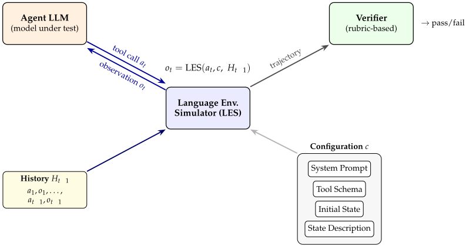
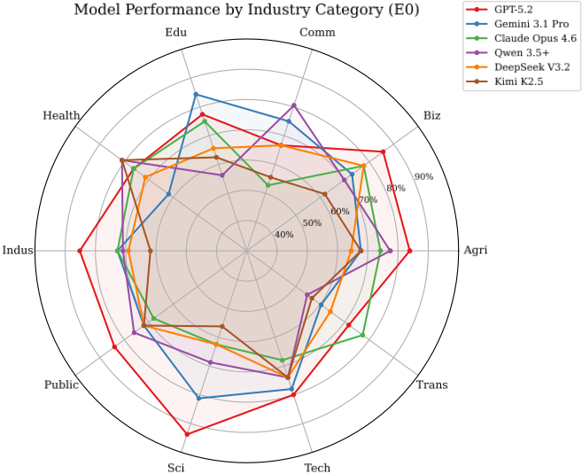
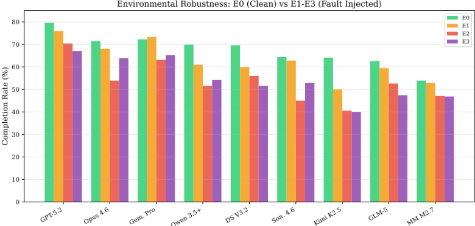
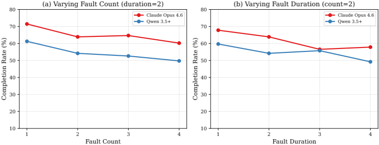
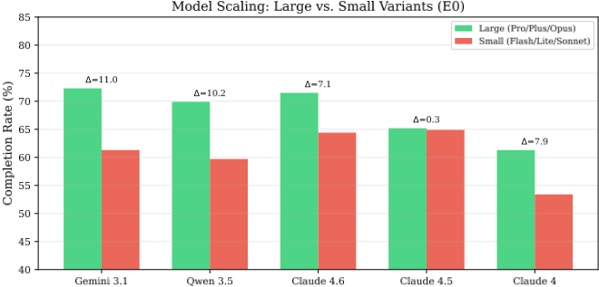
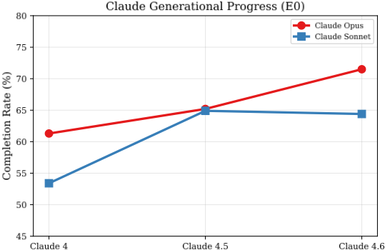
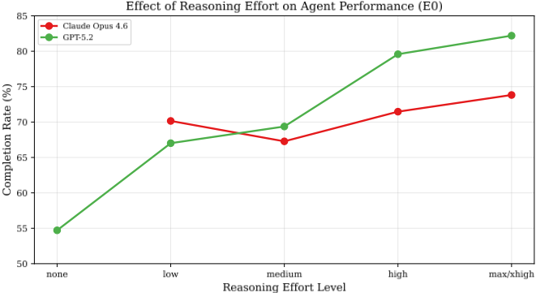
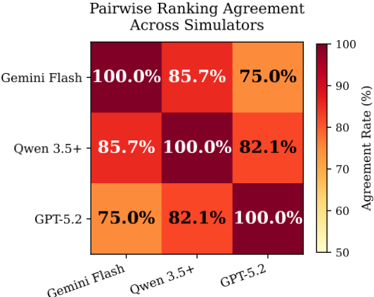
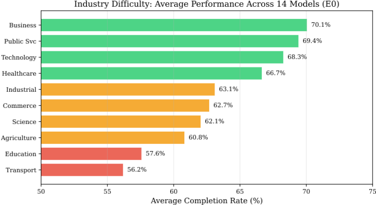

OccuBench：通过语言环境模拟（LES）评测 AI Agent 在真实职业任务上的表现
现有 Agent 评测基准依赖真实环境基础设施，只能覆盖网页、代码、桌面等少数领域，医疗、金融、能源等高价值职业任务长期无法评测。论文提出 Language Environment Simulator（LES）：给定 system prompt、tool schema、初始状态与状态描述四元配置，用 LLM 模拟有状态、可交互的领域环境并生成工具响应，把环境构建从工程问题变成配置问题；再用多智能体合成流水线自动生成可解、难度可校准的评测实例，构建出覆盖 10 大行业、65 个专业领域、100 个职业场景、382 个实例的 OccuBench，并通过注入显式/隐式/混合故障评测环境鲁棒性。对 15 个前沿模型的评测发现：无单一模型在所有行业占优；隐式故障（数据截断、字段缺失）比显式错误（超时、HTTP 500）更难，平均完成率从 67.5% 降至 53.4%；更高 reasoning effort 持续提升表现（GPT-5.2 提升 27.5 分）；强 Agent 未必是强模拟器，模拟器质量直接决定 LES 评测的可靠性。
现有 Agent 基准受限于环境实现：WebArena 需部署完整 Web 应用、TAU-bench 需集成真实 API，导致评测只能覆盖有公开环境的少数领域，而最需要 Agent 的高价值职业领域（医疗、金融、法律、制造、能源、政务、物流）因绑定企业系统、无公开 API、后果不可逆而成为评测盲区；同时现有基准只在干净环境（happy path）下评测，缺乏对 Agent 环境鲁棒性的系统评估。
提出 Language Environment Simulator（LES）：给定配置 c=(system prompt, tool schema, initial state, state description)，用 LLM 充当有状态、可交互的环境模拟器，在上下文窗口中隐式维护环境状态，根据 Agent 的工具调用生成结构化 JSON 观测，把环境构建从工程问题变为配置问题。用多智能体合成流水线（以 Gemini-3-Flash-Preview 为模拟器）自动生成环境配置、任务指令、工具定义、解题计划与验证 rubric，经多次执行校准难度、多数投票验证器判分、修复模块诊断修复，过滤掉全对/全错/工具 schema 无效的实例。评测时向 LES 的 system prompt 追加故障规则注入三类故障：E1 显式错误（HTTP 500、Timeout 等，正确行为是重试）、E2 隐式数据退化（截断数据、缺失字段、陈旧缓存，无错误信号，需 Agent 自行发现并重查）、E3 混合故障；以 Completion Rate 和 Robustness Score（最差故障环境与干净环境完成率之比）双维度评测。
15 个前沿模型（8 个模型家族）跨行业评测：GPT-5.2 总体第一（79.6%），Gemini 3.1 Pro 第二（72.3%），Claude Opus 4.6 第三（71.5%），开源的 Qwen 3.5 Plus（69.9%）与 DeepSeek V3.2（69.6%）位列第 4、5；无单一模型全行业占优（如 GPT-5.2 Science 94% 但 Commerce 67%，低于 Qwen 3.5 Plus 的 81%）
故障注入下平均完成率从 67.5%（E0）降至 53.4%（E2），下降 14.1 分；E2（53.4%）低于 E1（62.6%）和 E3（54.4%），隐式故障最难；Claude Opus 4.6 在隐式故障下下降 17.6 分（71.5%→53.9%），Qwen 3.5 Plus 下降 18.3 分（69.9%→51.6%）
故障参数消融：Claude Opus 4.6 随故障次数从 71.5%（fc=1）降至 60.2%（fc=4），随故障持续时间从 67.8%（fd=1）降至 57.9%（fd=4）
规模与代际：同家族大小模型差距 11.0%（Gemini Pro vs Flash-Lite）、10.2%（Qwen Plus vs Flash）、7.1%（Claude Opus vs Sonnet 4.6）；Claude Opus 三代 61.3%→65.2%→71.5%（+10.2%），Sonnet v4.5→v4.6 轻微回退（-0.5%）
reasoning effort 消融：GPT-5.2 从 none（54.7%）到 xhigh（82.2%）提升 27.5 分；Claude Opus 4.6 的 max（73.8%）比 low（70.2%）高 3.6 分
跨模拟器实验：GPT-5.2 作为 Agent 排名第一（79.6%）但作为模拟器最差，其模拟下 8 个 Agent 平均仅 29.3%（Gemini Flash 下 67.9%、Qwen 3.5 Plus 下 63.4%）；Qwen 3.5 Plus 模拟器与 Gemini Flash 在 85.7%（24/28）模型对上排序一致，Top-3 完全一致
行业难度：最易为 Business & Enterprise（平均 70.1%）与 Public Service & Governance（69.4%），最难为 Transportation & Logistics（56.2%）与 Education & Culture（57.6%）；最终评测集 382 个实例，平均每任务 5.5 个工具、16.2 次工具调用
与 WebArena/OSWorld/TAU-bench 等需要真实环境基础设施的基准不同，LES 用 LLM 模拟工具响应级的环境交互，把评测覆盖从'有公开环境的领域'扩展到'LLM 能理解的任何领域'，无需部署真实系统；与 GDPVal、$OneMillion-Bench 等基于 rubric 评产出质量的基准不同，OccuBench 测的是有状态环境中的交互式决策（多步工具调用、状态跟踪、错误处理）；并首次系统性地在评测时注入显式/隐式/混合环境故障来量化 Agent 鲁棒性，同时用跨模拟器实验揭示'模拟器是评测装置的一部分'这一此前被忽视的可靠性问题。
相关度级别：high
命中能力域：3.5 评测与可靠使用 | 3.3 Agent 架构与工具使用 | 3.4 多智能体协作
理由：直接命中 3.5（评测与可靠使用）：论文本身就是一个 Agent 评测基准加可靠性评测方法（故障注入、Robustness Score），其核心结论——隐式故障比显式错误更难、更高 reasoning effort 可靠提升表现、模拟器质量决定评测可靠性——可直接指导团队对自研 Agent 工具的评测体系设计与生产部署判断。同时命中 3.3：基准测的正是单 Agent 在多步工具调用、状态跟踪、错误处理上的执行可靠性，E1/E2 的失败模式分析（显式错误该重试、隐式退化该重查、易漏验证步骤）可反哺团队 Agent loop 与 harness 的设计。3.4 方面，其多智能体合成流水线（生成器 + 多数投票验证器 + 修复模块）是可借鉴的多 Agent 编排与群体决策模式。对团队最有价值的是 LES 思路本身：团队评测面向企业内部系统（无公开 API）的自动化 Agent 时，可用 LLM 模拟工具环境，无需搭建真实基础设施。
建议动作：深入精读并做内部分享
arXiv:2604.10866v2 [cs.CL] 2026年4月16日
Xiaomeng Hu 1,2 ∗ † Yinger Zhang 1 ∗ Fei Huang 1‡ Jianhong Tu 1‡ Yang Su 1 Lianghao Deng 1 Yuxuan Liu 1 Yantao Liu 1 Dayiheng Liu 1 Tsung-Yi Ho 2‡
1 阿里巴巴集团 Qwen 团队 2 香港中文大学
∗ 同等贡献 † 本工作于 Qwen 团队实习期间完成 ‡ 通讯作者
项目主页
联系邮箱：{ xmhu23,tyho } @cse.cuhk.edu.hk , { zhangyinger.zye,feihu.hf,tujianhong.tjh } @alibaba-inc.com
人们期望 AI Agent 能够在数百个职业领域（从急诊科分诊、核反应堆安全监控到海关进口处理）中完成专业工作，然而现有基准测试（benchmark）只能在少数存在公开环境的领域中评估 Agent。我们提出 OCCUBENCH——一个覆盖 10 个行业类别、65 个专业领域共 100 个真实世界专业任务场景的基准测试，其实现依托于语言环境模拟器（Language Environment Simulators, LESs），后者通过由大语言模型（LLM）驱动的工具响应生成来模拟特定领域的环境。我们的多智能体合成流水线能够自动生成具有可解性保证、经校准难度和基于文档多样性的评估实例。OCCUBENCH 从两个互补维度评估 Agent：跨专业领域的任务完成能力，以及受控故障注入（显式错误、隐式数据退化和混合故障）下的环境鲁棒性。我们评估了来自 8 个模型家族的 15 个前沿模型，发现：(1) 没有单一模型能在所有行业中占据主导地位，因为每个模型都具有独特的职业能力画像；(2) 隐式故障（数据截断、字段缺失）比显式错误（超时、500 错误）和混合故障都更难应对，因为它们缺乏明显的错误信号，需要 Agent 自主检测数据退化；(3) 更大的模型、更新的世代以及更高的推理力度均能持续提升性能。GPT-5.2 从最低推理力度到最高推理力度提升了 27.5 分；以及 (4) 强 Agent 未必是强环境模拟器。模拟器质量对基于 LES 的评估可靠性至关重要。OCCUBENCH 首次对 AI Agent 在专业职业任务上的表现进行了系统性的跨行业评估。
人们越来越期望 AI Agent 能够在多样化的职业领域中执行专业工作：对急诊患者进行分诊、审计财务报告、调度工厂生产线、响应网络入侵、处理报关单以及协调野火疏散。这些场景代表了 AI Agent 技术价值最高的应用方向，在这些场景中，通过多步工具调用实现的自主决策可以增强甚至替代成本高昂的人类专业知识。
然而，一个根本性的评估缺口客观存在：Agent 最能创造价值的专业领域，恰恰是不存在任何基准测试（benchmark）的领域。请思考以下任何现有基准测试都无法回答的问题：
这并不是一组边缘案例；这就是绝大多数专业工作的默认状态。由于若干根本性局限，现有的 Agent 基准测试在结构上无法覆盖这些领域：
不可测试的大多数。AI Agent 最被需要的专业领域——包括医疗、金融、法律、制造、能源、治理和物流——都绑定于企业系统，这些系统没有公开 API、不允许外部访问，且其现实世界后果不可逆转。当前的基准测试被局限于拥有可用环境的领域：WebArena (Zhou et al., 2024) 局限于网页浏览，OSWorld (Xie et al., 2024) 局限于桌面操作，SWE-bench (Jimenez et al., 2024) 局限于代码仓库，TAUbench (Yao et al., 2024) 局限于零售和航空 API。其结果是形成了一个覆盖绝大多数高价值专业工作的严重评估盲区。
令人望而却步的扩展成本。即便在已被覆盖的领域内，每个基准测试也受制于其环境实现。为 WebArena 添加一个新领域需要部署并配置完整的 Web 应用程序；扩展 TAU-bench 则需要集成新的真实 API 或手工编写模拟器。这种工程开销使得向数十乃至数百个专业领域的扩展在实践中不可行。
缺乏鲁棒性评估。真实世界环境充满噪声：API 会超时，数据会不完整地到达，服务会悄然退化。然而，现有基准测试仅在“理想路径”（happy path）上评估 Agent，没有就 Agent 如何处理环境故障提供系统性评估。这一缺口对于生产部署决策至关重要。
我们的方法：语言环境模拟器。我们的关键观察是：环境本身可以由大语言模型（LLM）来模拟。给定一个配置 c = (system prompt, tool schema, initial state, state description)，LLM 便成为一个有状态、可交互的环境模拟器，即语言环境模拟器（Language Environment Simulator, LES）。只要 LLM 理解某个领域的运行逻辑，它就能模拟该领域的工具响应。这将环境构建从工程问题转变为配置问题，把基准测试的覆盖范围从“拥有公开环境的领域”扩展到“LLM 能理解的任何领域”。
基于 LES，我们提出了 OCCUBENCH，这是一个基准测试，覆盖横跨 10 个行业类别和 65 个专业领域的 100 个真实职业任务场景，包含 382 个评估实例。每个场景都对应一个真实的人类职业角色（急诊分诊护士、运维工程师、海关关员、生产调度员），从而确保评估结果能够直接反映 Agent 胜任专业工作的程度。
OCCUBENCH 从两个互补的维度对 Agent 进行评估：
我们评估了横跨 8 个模型系列的 15 个前沿模型，并得出以下关键发现：
交通领域（77%），但在商业领域（53%）落后。每个模型都存在单领域基准测试无法察觉的盲区。
Agent 基准测试。Agent 基准测试可以按环境类型进行分类。Web 环境：WebArena (Zhou et al., 2024) 部署真实网站以执行基于浏览器的任务；VisualWebArena (Koh et al., 2024) 和 Mind2Web (Deng et al., 2023) 扩展到视觉与跨域的 Web 交互；WorkArena (Drouin et al., 2024) 针对 ServiceNow 上的企业知识工作；BrowseComp (Wei et al., 2025) 评估深度网页导航。操作系统（OS）与移动环境：OSWorld (Xie et al., 2024) 提供完整的操作系统虚拟机；AndroidWorld (Rawles et al., 2025) 对移动应用自动化进行基准测试；MobileBench (Deng et al., 2024) 评估基于大语言模型（LLM）的移动 Agent。代码环境：SWE-bench (Jimenez et al., 2024) 评估仓库级问题解决；InterCode (Yang et al., 2023) 提供带执行反馈的交互式编码；Terminal-Bench (Merrill et al., 2026) 在真实终端环境中测试 Agent。工具与 API 环境：TAU-bench (Yao et al., 2024) 评估工具-Agent-用户交互；BFCL (Patil et al., 2025) 对函数调用进行基准测试；AgentBench (Liu et al., 2024) 覆盖 8 个不同的环境；ToolLLM (Qin et al., 2024) 在 16,000 余个真实世界 API 上进行评估；GAIA (Mialon et al., 2023) 通过多模态推理和工具调用测试通用助手能力；MINT (Wang et al., 2024) 评估与工具的多轮交互；而 MCP-Bench (Wang et al., 2025)、MCP-Atlas (Bandi et al., 2026)、MCPMark (Wu et al., 2025) 和 Toolathlon (Li et al., 2026) 则通过真实的 MCP 服务器对工具调用能力进行基准测试。
所有这些基准测试都存在根本性的局限：（1）环境的构建与维护需要大量工程投入；（2）测试集是静态的，容易受到数据污染；（3）缺乏系统性的环境鲁棒性评估；而最关键的是，（4）领域覆盖极为有限：所有现有基准测试加在一起也仅覆盖网页浏览、代码编辑、桌面操作和少数几个 API 领域，使得绝大多数专业性的职业任务无法被测试。
真实世界职业任务评估。近期若干基准测试聚焦于具有经济价值的职业工作。GDPVal（Patwardhan et al., 2025）覆盖 9 个行业中的 44 种职业，包含 1,320 个由行业专家评分的任务，侧重于输出质量类任务（撰写法律简报、制作演示文稿）。$OneMillion-Bench（Yang et al., 2026）评估横跨法律、金融、工业、医疗保健与自然科学的 400 个由专家精选的任务，其中每个任务都依据资深专业人士的小时费率被赋予相应的货币价值。TheAgentCompany（Xu et al., 2025）将 Agent 作为执行具有实际影响的真实世界任务的数字工作者加以评估。SWE-Lancer（Miserendino et al., 2025）通过 1,400 多个总价值 100 万美元的真实自由职业软件工程任务，将 Agent 性能映射为货币价值。Claw-Eval（Ye et al., 2026）引入了一个端到端评估套件，包含横跨 9 个类别的 300 个经人工验证的任务，并基于 2,159 个细粒度评分细则项进行轨迹感知评分，以评估自主 Agent 的完成度、安全性与鲁棒性。这些基准测试与 OCCUBENCH 互为补充：GDPVal 与 $OneMillion-Bench 通过基于评分细则的评分来衡量交付成果的质量，TheAgentCompany 与 SWE-Lancer 侧重于与软件相关的工作，而 OCCUBENCH 则衡量横跨 65 个专业领域（从急诊分诊到核反应堆监控）的交互式决策，其要求在有状态环境中进行多步工具调用、状态跟踪与错误处理。
上下文学习（Context Learning）。CL-bench（Dou et al., 2026）评估模型从包含超出预训练范围之新知识的任务特定上下文中学习的能力，涵盖 500 个复杂上下文与 1,899 个任务。CL-bench 测试的是上下文依赖的推理，而 OCCUBENCH 测试的是上下文依赖的行动：Agent 不仅必须理解特定领域的上下文，还必须在其中执行多步工具调用工作流，处理环境反馈并适应意外情况。
世界模型与环境模拟。传统的世界模型，如 Dreamer (Hafner et al., 2020) 和 IRIS (Micheli et al., 2023)，从数据中学习环境动态，但仅限于低维状态空间。基于 LLM 的模拟方法，如 Generative Agents (Park et al., 2023)，使用语言模型来模拟社会行为，但不涉及工具调用交互或有状态的任务执行。近期的工作更直接地探索了将 LLM 用作环境模拟器：Li et al. (2025) 训练推理模型来模拟环境以用于 Agent 训练；Gu et al. (2024) 证明 LLM 可以作为互联网的世界模型用于 Web Agent 规划；WebWorld (Xiao et al., 2026) 在超过 100 万次交互上训练了首个大规模开放网络模拟器，证明了世界模型能够支持有效的 Agent 训练与推理时搜索；ViMo (Luo et al., 2025) 为 GUI Agent 构建了生成式视觉世界模型；自博弈（self-play）方法 (Chen et al., 2025) 则将世界模型内化以用于 Agentic 强化学习。我们的语言环境模拟器（Language Environment Simulator）方法占据了一个独特的定位：利用 LLM 模拟工具响应级别的环境交互以用于评估而非训练，支持跨 100 个场景和 65 个专业领域、具有真实动作空间的有状态多步专业任务。
我们将语言环境模拟器（Language Environment Simulator, LES）定义为一个函数：
其中 c = ( system prompt , tool schema , initial state , state description ) 为环境配置，st 为 LLM 通过其上下文窗口隐式维护的潜在环境状态，at 为 Agent 的动作（一次带有名称和参数的工具调用），ot + 1 为返回给 Agent 的观测（结构化的 JSON 工具响应）。
与从数据中学习状态转移函数的传统世界模型不同，LES 利用 LLM 对领域特定操作逻辑的预训练知识。系统提示（system prompt）编码了模拟规则；工具模式（tool schema）定义了动作空间；初始状态（initial state）与状态描述（state description）则约束 LLM 在整个交互过程中保持因果一致性。
每个 LES 环境由四个组件完整定义：

大语言模型（LLM）之所以能够成为专业任务的有效语言环境模拟器（LES），原因在于：(1) 格式先验：在海量 API 文档和工具调用日志上进行预训练，为生成格式规范的工具响应提供了强先验。(2) 领域知识：LLM 编码了数百个专业领域的运行逻辑，从医院分诊规程到网络防火墙规则。(3) 状态维护：系统提示约束与上下文状态跟踪相结合，使连贯的多轮模拟成为可能。(4) 边缘情况处理：与基于规则的模拟器相比，LLM 能够更优雅地处理意外输入，并为越界参数生成合理的错误响应。
图 1 展示了评估时 Agent 与 LES 之间的交互循环。
每个评估实例必须满足四个条件：(1) 可解（solvable）：存在有效解且已通过验证；(2) 可验证（verifiable）：具有清晰、自动化的成功判据；(3) 有区分度（discriminative）：经过校准的难度能够区分不同 Agent 的能力；(4) 多样（diverse）：各实例之间存在结构性差异。
为确保多样性，我们为每个场景设计了 16 个互不重叠的子主题，并为每个子主题构建一份专业参考文档，涵盖领域术语、工作流程、状态变量、边缘情况与约束条件。这些文档为后续所有生成过程提供依据，确保各实例在结构上而非表面上存在差异。
我们采用由 Gemini-3-Flash-Preview 驱动的多智能体合成流水线作为语言环境模拟器（Language Environment Simulator）。该流水线生成环境配置、任务指令、工具定义、解决方案计划以及验证评分细则。每个任务在有参考计划与无参考计划的条件下各执行多次，以验证可解性并校准难度。多数投票（majority-vote）验证器依据评分细则对轨迹进行评估，修复模块则在重新执行之前诊断并修复失败。过于简单（100% 自主成功）、不可解（0% 成功）或工具 schema 无效的任务将被过滤掉。
5
| Category | # | Representative Scenarios |
|---|---|---|
| Business &Enterprise Technology &IT Industrial &Engineering Transportation &Logistics Commerce &Consumer Education &Culture Healthcare &Life Sciences Public Service &Governance Agriculture &Environment Science &Research | 19 16 12 11 9 8 7 7 7 4 | Resume screening, expense auditing, AMLreview Linux ops, CI/CD recovery, intrusion response Production scheduling, mine ventilation Last-mile delivery, train dispatch Dynamic pricing, hotel revenue mgmt. Adaptive curriculum, fact-checking Emergency triage, drug interaction screening Permit processing, wildfire evacuation Irrigation control, crop disease diagnosis Telescope scheduling, excavation planning |
| Category | # | Representative Scenarios |
OCCUBENCH 涵盖 10 个行业类别和 65 个专业领域中的 100 个专业任务场景（表 1）。每个场景都映射到一个真实的人类职业角色，从而确保评估结果具有直接的实践相关性。经过合成与质量过滤，移除了所有难度级别均被轻易解决（100% 自主成功率）的实例、无法求解（0% 成功率）的实例，以及工具 schema 无效的实例。我们的评估集包含 382 个可求解的任务实例，覆盖全部 100 个场景。对于每个任务，我们选择自主成功率最低的难度级别，以最大化区分度。最终数据集平均每个任务包含 5.5 个工具和 16.2 次工具调用。
场景设计原则。(1) 真实职业映射：每个场景对应一个实际的职业角色，而非抽象任务。(2) 领域均衡：没有任何单一领域贡献超过 3 个场景。(3) 不可替代性：大多数场景（核安全、药物筛选、应急协调）无法被任何现有基准测试所测试。(4) 多步交互：所有场景都需要多轮状态转换，而非单步函数调用。
OCCUBENCH 通过在评估时进行受控故障注入来评估 Agent 的鲁棒性。所有数据均在干净环境（E0）中合成；故障通过在评估期间向 LES 的系统提示词追加故障规则来注入。
E0（干净）：无故障。基线性能。
E1（显式故障）：LES 随机注入清晰可见的错误响应：HTTP 500 Internal Server Error、TimeoutError、ConnectionRefused、ServiceUnavailable。这些故障具有明确的错误信号：Agent 知道调用已失败。正确的行为是进行重试。
E2（隐式故障）：LES 返回没有任何错误信号的降级响应：被截断的数据（缺失字段）、不完整的列表（仅前 1-2 项）、空/null 字段，或过期的缓存值。响应在表面上看起来是正确的。正确的行为是检测到质量问题并重新查询。
E3（混合）：大约一半为显式故障，一半为隐式故障。
所有故障都是瞬态的（重试即可恢复正常结果），分散在整个交互过程中（而非集中在开始阶段），并由两个独立的控制参数进行参数化：故障数量（fault count，即故障事件的数量，默认为 2）和故障持续时间（fault duration，即每个事件影响的连续工具调用次数，默认为 2）。
6
| Model | Avg | Agri | Biz | Comm | Edu | Hlth | Ind | Pub | Sci | Tech | Trans |
|---|---|---|---|---|---|---|---|---|---|---|---|
| GPT-5.2 | 79.6 | 84 | 86 | 67 | 77 | 76 | 85 | 84 | 94 | 80 | 72 |
| Gemini 3.1 Pro | 72.3 | 68 | 73 | 75 | 84 | 62 | 73 | 72 | 81 | 78 | 60 |
| Claude Opus 4.6 | 71.5 | 74 | 78 | 53 | 75 | 76 | 73 | 68 | 62 | 68 | 77 |
| Qwen 3.5 Plus | 69.9 | 77 | 70 | 81 | 56 | 81 | 71 | 76 | 69 | 74 | 55 |
| DeepSeek V3.2 | 69.6 | 65 | 78 | 67 | 66 | 71 | 69 | 72 | 62 | 74 | 64 |
| Claude Opus 4.5 | 65.2 | 58 | 76 | 56 | 62 | 52 | 65 | 72 | 56 | 68 | 66 |
| Claude Sonnet 4.5 | 64.9 | 65 | 70 | 69 | 50 | 71 | 71 | 60 | 44 | 68 | 62 |
| Claude Sonnet 4.6 | 64.4 | 58 | 71 | 64 | 69 | 67 | 64 | 64 | 69 | 64 | 57 |
| Kimi K2.5 | 64.1 | 68 | 62 | 56 | 62 | 81 | 62 | 72 | 56 | 74 | 57 |
| GLM-5 | 62.6 | 55 | 75 | 67 | 53 | 57 | 56 | 68 | 62 | 70 | 55 |
| Claude Opus 4 | 61.3 | 52 | 75 | 50 | 53 | 57 | 58 | 76 | 81 | 66 | 51 |
| Gemini 3.1 FL | 61.3 | 68 | 70 | 58 | 53 | 67 | 58 | 68 | 62 | 68 | 45 |
| Qwen 3.5 Flash | 59.7 | 61 | 60 | 67 | 53 | 76 | 53 | 68 | 69 | 60 | 51 |
| MiniMax M2.7 | 53.9 | 48 | 60 | 56 | 31 | 57 | 60 | 60 | 62 | 64 | 40 |
| Claude Sonnet 4 | 53.4 | 35 | 63 | 61 | 38 | 57 | 51 | 76 | 31 | 60 | 47 |
| Model | Avg | Agri | Biz | Comm | Edu | Hlth | Ind | Pub | Sci | Tech | Trans |
完成率（Completion Rate，CR）：在 382 个任务中，Agent 的轨迹通过基于评分标准的自动化验证的任务所占比例。我们以完整的 382 个任务作为分母来报告所有比率。
鲁棒性得分（Robustness Score，R）：R = min ( CR E 1 , CR E 2 , CR E 3 ) /CR E 0 ，衡量在所有故障类型下的最坏情况韧性。得分为 1.0 表示没有退化；得分越低表示对环境噪声越敏感。我们采用最小值。
我们评估了 15 个前沿模型，涵盖 8 个模型家族：OpenAI（GPT-5.2 (OpenAI, 2025)）、Anthropic（Claude Opus/Sonnet 4、4.5、4.6 (Anthropic, 2025a;b;c;d)）、Google（Gemini 3.1 Pro、Flash-Lite (Google DeepMind, 2025)）、DeepSeek（V3.2 (DeepSeek-AI, 2025)）、Moonshot（Kimi K2.5 (Kimi Team, 2026)）、MiniMax（M2.7 (MiniMax, 2026)）、Zhipu（GLM5 (GLM-5-Team, 2026)）以及 Alibaba（Qwen 3.5 Plus、Flash (Qwen Team, 2026)）。所有模型在可用时均启用思考/推理（thinking/reasoning）模式，默认的语言环境模拟器（Language Environment Simulator）为 Gemini-3-Flash-Preview。
表 2 展示了全部 15 个模型在 10 个行业类别上的完成率。
没有任何单一模型能在所有行业中占据主导地位。GPT-5.2 总体领先（79.6%），在农业（84%）、商业（86%）、工业（85%）和科学（94%）领域得分最高，但其商贸得分（67%）远低于 Qwen 3.5 Plus（81%）。Gemini 3.1 Pro 位列第二（72.3%），在教育领域得分最高（84%）。排名第三的 Claude Opus 4.6（71.5%）则呈现出相反的模式：在交通运输（77%）和商业（78%）领域最强，但在商贸领域最弱（53%）。Qwen 3.5 Plus 在医疗健康和商贸领域领先（均为 81%），但在教育领域落后（56%）。
开源模型极具竞争力。Qwen 3.5 Plus（69.9%）和 DeepSeek V3.2（69.6%）分别位列第 4 和第 5 名，超越了大多数 Claude 变体模型。这一结果挑战了闭源模型在专业任务上普遍优于开源替代方案的传统假设。
7

| Model | E0 | E1 | E2 | E3 | Rob. |
|---|---|---|---|---|---|
| Gemini 3.1 Pro | 72.3 | 73.3 | 63.1 | 65.2 | 0.87 |
| MiniMax M2.7 | 53.9 | 52.9 | 47.1 | 46.9 | 0.87 |
| GPT-5.2 | 79.6 | 75.9 | 70.4 | 67 | 0.84 |
| GLM-5 | 62.6 | 59.4 | 52.6 | 47.4 | 0.76 |
| Claude Opus 4.6 | 71.5 | 68.1 | 53.9 | 63.9 | 0.75 |
| DeepSeek V3.2 | 69.6 | 59.9 | 56 | 51.6 | 0.74 |
| Qwen 3.5 Plus | 69.9 | 61 | 51.6 | 54.2 | 0.74 |
| Claude Sonnet 4.6 | 64.4 | 62.8 | 45 | 52.9 | 0.7 |
| Kimi K2.5 | 64.1 | 50 | 40.6 | 40.1 | 0.63 |
| Avg | 67.5 | 62.6 | 53.4 | 54.4 | 0.77 |
| Model | E0 | E1 | E2 | E3 | Rob. |
每个模型都具有独特的职业能力画像。图 2 可视化了排名前 6 的模型在各行业中的表现，揭示出截然不同的能力形态。这种多样性唯有通过 OCCUBENCH 的跨行业设计才能得以揭示，而在单一领域基准测试中是不可见的。
表 3 给出了 9 个旗舰模型（每个家族一个）在故障注入下的完成率，图 3 对该比较进行了可视化。
当前的 Agent 在恶劣环境下举步维艰。即使仅有 2 次故障事件、每次持续 2 轮，各模型的性能也全面大幅下降：平均完成率从 67.5%（E0）降至 53.4%（E2），下降了 14.1 个百分点。即使是最强的模型也未能幸免：Claude Opus 4.6 在隐式故障下下降 17.6 个百分点（71.5% → 53.9%），Qwen 3.5 Plus 下降 18.3 个百分点（69.9% → 51.6%）。这揭示了干净环境下的能力与真实世界部署就绪度之间的显著差距。
8

隐式故障（E2）比显式故障（E1）和混合故障（E3）都更难。与直觉相反，9 个模型中有 4 个在 E2 下的表现比 E3 更差，且 E2 的平均得分（53.4%）同时低于 E1（62.6%）和 E3（54.4%）。显式错误（超时、HTTP 500）提供了明确无误的失败信号，会促使重试；而隐式故障（数据截断、字段缺失）则要求 Agent 独立评估响应质量，而这是大多数模型所缺乏的能力。E3 的显式错误成分部分弥补了其隐式成分，使得纯隐式故障（E2）成为整体上最困难的环境。
提高故障严重程度会加深挑战。我们在三个代表性模型上对故障参数进行了消融实验（图 4）。当故障数量和持续时间超过默认值（fc=2, fd=2）后，性能持续下降：Claude Opus 4.6 从 71.5%（fc=1）降至 60.2%（fc=4），从 67.8%（fd=1）降至 57.9%（fd=4）。Qwen 3.5 Plus 从 61.3% 降至 49.7%（数量），从 59.7% 降至 49.2%（持续时间）。这些结果凸显了在真实世界环境中部署 Agent 所面临的日益严峻的挑战：在这类环境中，故障不仅不可避免，而且可能频繁出现并持续存在。
OCCUBENCH 支持在同一模型家族内对不同规模的模型进行直接比较（图 5）。
较大的模型始终优于较小的同类模型，差距分别为 11.0%（Gemini Pro 对比 Flash-Lite）、10.2%（Qwen Plus 对比 Flash）和 7.1%（Claude Opus 对比 Sonnet 4.6）。一个显著的例外是 Claude 4.5，其中 Opus 与 Sonnet 的表现几乎相同（65.2% 对比 64.9%），这表明 4.5 代的架构改进对两种模型规模带来了同等的收益。
图 6 追踪了 Claude 在三代模型中的性能演进。
9


Claude Opus 展现出持续的代际提升：61.3% → 65.2% → 71.5%（总计 +10.2%）。Sonnet 从 v4 到 v4.5 出现大幅跃升（+11.5%），但从 v4.5 到 v4.6 则有轻微回退（-0.5%），这可能反映了 4.6 自适应思考（adaptive thinking）架构中推理深度与执行效率之间的权衡。
我们评估了推理努力程度（reasoning effort，即思考深度）对两个支持可配置努力程度级别的模型的影响：Claude Opus 4.6 和 GPT-5.2（图 7）。
更高的推理努力程度通常会带来更好的 Agent 性能。GPT-5.2 呈现出清晰的单调趋势：从 none（54.7%）提升至 xhigh（82.2%），提高了 27.5 个百分点，这表明更深入的推理能直接转化为更优的任务执行。Claude Opus 4.6 呈现出类似的总体趋势，其最高努力程度级别 max（73.8%）比 low（70.2%）高出 3.6 个百分点。这些结果表明，在推理时为推理过程分配更多算力，是提升 Agent 在复杂专业任务上性能的可靠策略。


对于基于语言环境仿真（LES）的评估而言，一个关键问题是：强大的 Agent 模型是否同时也是强大的环境模拟器。我们在三个模拟器下评估了 8 个 Agent：默认的 Gemini-3Flash-Preview、Qwen 3.5 Plus 以及 GPT-5.2。表 4 展示了结果。
为了量化排名一致性，我们计算了成对一致率（pairwise agreement rate）：对于 ( 8 2 ) = 28 个模型对中的每一对，我们检查其相对排序（哪个模型得分更高）是否在不同模拟器之间得以保持。图 8 展示了该一致率矩阵。
强大的 Agent 未必是强大的模拟器。GPT-5.2 作为 Agent 排名第一（79.6%），但其模拟质量却最差：在 GPT-5.2 模拟器下，所有 Agent 的平均得分仅为 29.3%，而在 Gemini Flash 下为 67.9%，在 Qwen 3.5 Plus 下为 63.4%。图 9-11 展示了三个代表性失败案例：在这些案例中，同一个 Agent（Claude Opus 4.6）在两个模拟器下执行了相同的工具调用序列，却收到了不同的观测结果。
11
| Agent | Gemini Flash.CR | Gemini Flash.Rk | Qwen 3.5+.CR | Qwen 3.5+.Rk | GPT-5.2.CR | GPT-5.2.Rk |
|---|---|---|---|---|---|---|
| GPT-5.2 | 79.6 | 1 | 74.3 | 1 | 42.4 | 1 |
| Gemini Pro | 72.3 | 2 | 68.6 | 2 | 28.3 | 4 |
| Opus 4.6 | 71.5 | 3 | 66.2 | 3 | 33.5 | 2 |
| Qwen 3.5+ | 69.9 | 4 | 61.8 | 6 | 28.3 | 4 |
| DeepSeek | 69.6 | 5 | 65.2 | 4 | 29.6 | 3 |
| Kimi K2.5 | 64.1 | 6 | 52.4 | 8 | 23 | 8 |
| GLM-5 | 62.6 | 7 | 64.1 | 5 | 23.6 | 7 |
| MiniMax M2.7 | 53.9 | 8 | 54.7 | 7 | 25.4 | 6 |
| Agent | Gemini Flash.CR | Gemini Flash.Rk | Qwen 3.5+.CR | Qwen 3.5+.Rk | GPT-5.2.CR | GPT-5.2.Rk |

这三个案例展示了三种不同的模拟器失败模式：状态捏造（state fabrication，虚构出并不存在的房间）、实体遗漏（entity omission，从名单中遗漏 Agent）以及规则杜撰（rule invention，强制执行规范中并不存在的约束）。在所有案例中，Agent 的策略都是正确的；其失败仅仅是因为模拟器违反了环境契约。
能力强的模拟器能产生可靠的排名。相比之下，Qwen 3.5 Plus 模拟器并未表现出上述失败模式，其在 85.7% 的成对比较（24/28 对）中与 Gemini Flash 的结果一致，且排名前三的 Agent（GPT-5.2、Gemini Pro、Opus 4.6）完全吻合。这四处分歧均涉及性能差距较小的排名居中模型。这证实了当模拟器能力足够强时，基于 LES 的评估能够产生可靠的排名，但研究者应当：(1) 在得出结论之前验证模拟器质量，或 (2) 在切换模拟器时重新验证任务的可解性。
12
| Task: Emergency Department Triage.Instruction: Discharge P-110 (has clearance) from Exam Room 2, transfer P-552 into the vacated room, execute Phase 1 Data Acquisition then Sepsis Clinical Bundle..Gemini Flash (PASS) | Agent: Claude Opus 4.6.Instruction: Discharge P-110 (has clearance) from Exam Room 2, transfer P-552 into the vacated room, execute Phase 1 Data Acquisition then Sepsis Clinical Bundle..GPT-5.2 (FAIL) |
|---|---|
| 1-2 : get ed census , get room status → P-552 in waiting (temp 39.4, HR 112) → Room 1: P-202, Room 2: P-110 (clearance) | 1-2 : get ed census , get room status → P-552 in waiting (temp 39.4, HR 112) → ROOM 01: P-202,ROOM 02: P-110 ROOM 03: empty,ROOM 04: empty |
| 3 : discharge (P-110, Room 2) → vacated Room 2 4 : transfer (P-552, Room 2 ) → success, location: Room 2 | 3 : discharge (P-110,ROOM 02) → vacatedROOM 02 3 : transfer (P-552, ROOM 03 ) → success, location: ROOM 03 |
| 5 : execute protocol (Phase 1) → completed, cds: active 6 : execute protocol (Sepsis Bundle) → completed | 4 : execute protocol (Phase 1) → completed, cds: sepsis screen alert 5 : execute protocol (Sepsis Bundle) → in progress |
| Root cause: GPT-5.2 invents two extra empty rooms (ROOM 03,ROOM 04). The agent sees an available room and uses it, but the rubric requires using the vacated room specifically. | Root cause: GPT-5.2 invents two extra empty rooms (ROOM 03,ROOM 04). The agent sees an available room and uses it, but the rubric requires using the vacated room specifically. |
| Task: Emergency Department Triage.Instruction: Discharge P-110 (has clearance) from Exam Room 2, transfer P-552 into the vacated room, execute Phase 1 Data Acquisition then Sepsis Clinical Bundle..Gemini Flash (PASS) | Agent: Claude Opus 4.6.Instruction: Discharge P-110 (has clearance) from Exam Room 2, transfer P-552 into the vacated room, execute Phase 1 Data Acquisition then Sepsis Clinical Bundle..GPT-5.2 (FAIL) |
| Task: Escalation Workflow Management | Agent: Claude Opus 4.6 |
|---|---|
| Instruction: Hand off urgent ticket INC-9921 from Sarah London (EMEA) to an available NA- timezone Database specialist before 17:00Z shift change. Post a Current State Assessment and log compliance. | Instruction: Hand off urgent ticket INC-9921 from Sarah London (EMEA) to an available NA- timezone Database specialist before 17:00Z shift change. Post a Current State Assessment and log compliance. |
| Gemini Flash (PASS) | GPT-5.2 (FAIL) |
| 1-2 : get system clock , get ticket details → time: 16:45Z → priority: Urgent → assignee: Sarah London | 1-2 : get ticket details , get system clock → time: 16:45Z → priority: Urgent → assignee: Sarah London |
| 3 : query agent roster (tier ≥ 2, NA) → Raj NYC (Tier 2, Database, avail 17:00Z) → MOC Global (Tier 3, Management) | 3 : query agent roster (tier ≥ 3, NA) → MOC Global (Tier 3, Management) Raj NYC omitted from roster |
| 4 : post ticket csa (detailed CSA) ✓ 5 : assign ticket ( Raj NYC ) → new assignee: Raj NYC ✓ 6 : log protocol compliance ✓ | 4 : post ticket csa (CSA) ✓ 5 : assign ticket (MOC Global) → new assignee: MOC Global 6 : log protocol compliance ✓ |
| Root cause: GPT-5.2 omits 'Raj NYC' (Tier 2, Database specialist) from the roster query results, despite this agent being explicitly defined in the environment state. The agent assigns the only returned candidate (MOC Global, a Tier 3 manager), which does not satisfy the requirement for a Database specialist. | Root cause: GPT-5.2 omits 'Raj NYC' (Tier 2, Database specialist) from the roster query results, despite this agent being explicitly defined in the environment state. The agent assigns the only returned candidate (MOC Global, a Tier 3 manager), which does not satisfy the requirement for a Database specialist. |
| Task: Escalation Workflow Management | Agent: Claude Opus 4.6 |
汇总全部 15 个模型的结果后，我们发现各行业难度存在很大差异（图 12）。最简单的行业是商业与企业（Business & Enterprise，各模型平均 70.1%）和公共服务与治理（Public Service & Governance，平均 69.4%），而最难的行业是交通运输与物流（Transportation & Logistics，平均 56.2%）和教育与文化（Education & Culture，平均 57.6%）。这与领域复杂度相符：商业和公共服务类任务往往遵循文档完善、决策路径清晰的流程，而交通运输涉及复杂的多约束优化（路径规划、任务：订单退货授权 Agent：
13
指令：处理订单 ORD-8829-HZ 的危险品退货（VoltMaster 5000 Power Station，机壳破裂）。完成安全分诊，并授权附带危险品标签的退货。
| Gemini Flash (PASS) | GPT-5.2 (FAIL) |
|---|---|
| 1 : get order details (ORD-8829-HZ) → SKU: VM-5000-PB, delivered 2023-11-10 → return window: 30 days | 1 : get order details (ORD-8829-HZ) → SKU: VM-5000-PB, delivered 2023-11-10 → return window: 30 days |
| 2 : submit hazmat triage → class: DDR lithium battery → transport: allowed → packaging: UN-certified metal drum | 2 : submit hazmat triage → class: DDR lithium battery → transport: allowed → packaging: UN-certified rigid outer |
| 3 : authorize return (refund $899.99) → code: RMA-8829-HZ-99 → status: return authorized → label: Hazmat Class 9 - Ground | 3 : authorize return (refund $499.99) → error: ''Return window expired'' GPT-5.2 enforces a date check not in the task specification |
| Gemini Flash (PASS) | GPT-5.2 (FAIL) |
根本原因：GPT-5.2 自行计算得出 30 天退货窗口已过期（交付日期 2023-11-10 对比模拟日期 2026 年），并拒绝了该退货。任务规范中并未包含这一约束；LES 应当像 Gemini 那样授权该退货。

调度、负载均衡），而教育则需要细致的教学判断和多步骤的课程推理。
在总体排名之外，OCCUBENCH 还揭示出，每个模型都具有独特的职业能力画像，即在各行业中呈现出独特的优势与劣势模式：
14
这种跨行业画像能力是 OCCUBENCH 所独有的，并具有实际意义：组织应当根据自身所处的具体行业来选择 Agent 模型，而不仅仅是依据基准测试的总体排名。
图 13 展示了来自交通运输与物流（Transportation & Logistics）类别（物流领域）的一个详细案例，说明了 OCCUBENCH 如何通过贴近现实的专业任务来区分各 Agent 的能力。
图 14 展示了来自农业与环境（Agriculture & Environment）类别（水产养殖领域）的第二个案例，重点展示了“跳过验证”这一失效模式。
图 15 展示了来自工业与工程（Industrial & Engineering）类别（建筑领域）的第三个案例，说明了流程顺序错误如何导致合规性失效。
图 16 对比了公共交通任务中 E1 显式故障注入下的 Agent 行为。两个模型在 E0 下均通过。
图 17 展示了 E2 隐式故障注入，其中数据被静默截断，且没有任何错误信号。
模拟保真度。语言环境模拟器（LES）建模的是领域逻辑而非领域数据。一个 LES 明白药物相互作用检查应当返回禁忌症，但其返回的具体数值是生成出来的，而非从真实数据库中检索得到。这意味着 OCCUBENCH 评估的是 Agent 的决策过程（是否以正确的顺序检查了正确的内容），而非其处理精确真实世界数据值的能力。对于精确数值正确性至关重要的领域（例如精确到分的财务计算），基于 LES 的评估应辅以真实环境测试。
15
| Scenario: Last-Mile Delivery Routing | Category: Transportation &Logistics / Logistics |
|---|---|
| Task Instruction: Identify the medical-grade shipment with the highest numerical suffix and deliver it to '900 NMichigan Shops' via the Walton Street access node. Resolve the address to its historically corrected navigable node to avoid frontage congestion timeout. Maintain battery level above 15% at all times. | Task Instruction: Identify the medical-grade shipment with the highest numerical suffix and deliver it to '900 NMichigan Shops' via the Walton Street access node. Resolve the address to its historically corrected navigable node to avoid frontage congestion timeout. Maintain battery level above 15% at all times. |
| Tool Schema (6 tools): get vehicle telemetry() query inventory() geocode delivery node(location string) execute recharge() move to node(target node id) complete delivery(package id) | Returns battery level ¤t location Lists all packages with IDs, types, weights Resolves address to navigable node ID Recharges battery to 100% Navigates vehicle to target node Finalizes package hand-off at current location |
| Scenario: Last-Mile Delivery Routing | Category: Transportation &Logistics / Logistics |
| Claude Opus 4.6 -PASS (6 steps) | DeepSeek V3.2 -FAIL (6 steps) |
|---|---|
| Step 1-3 (parallel): query inventory → MED-602, MED-615 , MED-609, GEN-550 get vehicle telemetry → battery: 28%, loc: depot ohare cargo geocode delivery node → NODE WALTON ST 900 NAV | Step 1 : get vehicle telemetry → battery: 28%, loc: depot ohare cargo Step 2 : query inventory → MED-602, MED-615 , MED-609, GEN-550 Step 3 : geocode delivery node → NODE WALTON ST 900 NAV |
| 'Battery 28%, the trip could drain it below 15%. I must recharge first.' Step 4 : execute recharge → battery: 100%, status: charged | Step 4 : move to node → arrived, battery: 12.5% < 15% Constraint violated! |
| Step 5 : move to node → arrived, battery: 82% ≫ 15% | Step 5 : execute recharge (too late) → battery: 100% |
| Step 6 : complete delivery(MED-615) → status: delivered | Step 6 : complete delivery(MED-615) → status: delivered, but FAILED |
| Claude Opus 4.6 -PASS (6 steps) | DeepSeek V3.2 -FAIL (6 steps) |
分析：两个 Agent 都正确识别了目标包裹（MED-615，后缀最高），并解析了 Walton Street 接入节点。关键差异在于主动约束监控：Claude Opus 4.6 意识到 28% 的电量对长途行程存在风险，因此在导航前先进行充电，到达时剩余电量为 82%。DeepSeek V3.2 则立即开始导航，任由电量降至 12.5%，违反了“始终保持在 15% 以上”的约束。
模拟器依赖性。正如我们的跨模拟器实验所表明的，评估结果与数据合成期间所使用的特定模拟器绑定。在 Gemini-3-Flash 下被验证为可解的任务，在不同的 LES 下可能变得不可解，并且当模拟器改变时，Agent 的排名也可能发生变化。这是任何基于 LES 的评估的固有局限：模拟器是评估装置的一部分，而非中立的观察者。
We present OCCUBENCH, the first benchmark systematically evaluating AI agents on realworld professional tasks across 100 scenarios, 65 specialized domains, and 10 industry categories. Through Language Environment Simulators, OCCUBENCH makes the 'untestable majority' of professional domains evaluable without any real environment infrastructure.
Our evaluation of 15 frontier models reveals that: (1) no model dominates across all industries, with each exhibiting a unique occupational capability profile; (2) implicit environmental faults are harder than both explicit and mixed faults, because they lack overt error signals and require agents to independently detect data degradation; (3) scaling (larger models, newer generations, and higher reasoning effort) consistently improves professional Analysis: Both agents followed nearly identical strategies: profile → diagnose → configure mixing → reduce feeding → verify. The critical difference is in Step 7: Claude Opus 4.6 re-checked bottom water chemistry after mixing to verify that toxic metabolites were not resuspended, a safety-critical step. Qwen 3.5 Plus skipped this verification and instead checked equipment status, then asserted that 'ammonia remained low' without evidence. This exemplifies the skipped verification failure mode: the agent makes a correct claim but fails to gather the supporting observation, which the verifier cannot accept.
16
| 0 | 1 |
|---|---|
| Scenario: Fish Farm Water Quality Control Category: Agriculture &Environment / Aquaculture Task Instruction: Prepare a 5.2m deep basin for an imminent cold front. Homogenize the water column to achieve a thermal gradient < 1.5°C and dissolved oxygen > 4.0 mg/L at every depth. Equipment selection and mixing intensity must be dictated by the stratification condition and chemical profile discovered upon initial profiling. Avoid actions that trigger surface oxygen drops or resuspension of toxic bottom metabolites. Manage feeding regime according to risk | Scenario: Fish Farm Water Quality Control Category: Agriculture &Environment / Aquaculture Task Instruction: Prepare a 5.2m deep basin for an imminent cold front. Homogenize the water column to achieve a thermal gradient < 1.5°C and dissolved oxygen > 4.0 mg/L at every depth. Equipment selection and mixing intensity must be dictated by the stratification condition and chemical profile discovered upon initial profiling. Avoid actions that trigger surface oxygen drops or resuspension of toxic bottom metabolites. Manage feeding regime according to risk |
| level. Tool Schema (5 tools): get vertical profile(depths) get water chemistry(depth) get system status() configure mixing and aeration(aerator mixing intensity) manage feeding(regime) | Temperature &DOat specified depths pH &ammonia at a specific depth Basin metadata, equipment, feeding time mode, Set aerator mode &mixing intensity Control feeding regime |
| 0 | 1 |
| Claude Opus 4.6 -PASS (7 steps) | Qwen 3.5 Plus -FAIL (7 steps) |
|---|---|
| Step 1-3 (parallel profiling): get vertical profile([0..5]) → surface 29.5°C, bottom 27.1°C → bottom DO: 3.5 mg/L (below 4.0) get water chemistry(5) → ammonia: 0.05 mg/L (safe to mix) get system status → aerator OFF | Step 1-3 (sequential profiling): get vertical profile([0.5,2.5,4.5,5.2]) → gradient 2.1°C → bottom DO: 4.2 mg/L get water chemistry(5.2) → ammonia: 0.05 mg/L get system status → aerator OFF |
| Step 4-5 (corrective actions): configure mixing (medium, 40) manage feeding (reduced) | Step 4-5 (corrective actions): configure mixing (medium, 50) manage feeding (reduced) |
| Step 6 (verification profile): get vertical profile([0..5]) → gradient 1.0°C ✓ , allDO > 6.0 ✓ | Step 6 (verification profile): get vertical profile([0.5..5.2]) → gradient 0.6°C ✓ , allDO > 7.1 ✓ |
| Step 7 : get water chemistry(5) → ammonia 0.04 mg/L Confirms no toxic resuspension | Step 7 : get system status → aerator: medium Did NOT re-check chemistry Claims 'ammonia remained low' without supporting evidence |
| Claude Opus 4.6 -PASS (7 steps) | Qwen 3.5 Plus -FAIL (7 steps) |
task performance; and (4) strong agents are not necessarily strong environment simulators: simulator quality is critical for LES-based evaluation, but with a capable simulator, agent rankings are highly consistent (85.7% pairwise agreement).
These findings underscore the need for multi-dimensional agent evaluation that considers not just task completion but cross-industry specialization and environmental resilience. OCCUBENCH provides a framework for this richer evaluation paradigm.
17
| 0 | 1 |
|---|---|
| Scenario: Building Inspection Compliance Category: Industrial &Engineering / Construction | Scenario: Building Inspection Compliance Category: Industrial &Engineering / Construction |
| Task Instruction: Complete clinical certification for a medical gas system expansion in Room 402 Oncology. Integrate new oxygen supply lines per NFPA 99 standards: verified nitrogen-purged brazing, 24-hour pressure stability test. Must maintain ICRA Class IV containment throughout. All permits (safety certificate, hot work permit) must be active before invasive mechanical work begins. | Task Instruction: Complete clinical certification for a medical gas system expansion in Room 402 Oncology. Integrate new oxygen supply lines per NFPA 99 standards: verified nitrogen-purged brazing, 24-hour pressure stability test. Must maintain ICRA Class IV containment throughout. All permits (safety certificate, hot work permit) must be active before invasive mechanical work begins. |
| Tool Schema (7 tools): get environment state() renew permit(permit type, zone id) manage containment infrastructure (component, operation, zone id) manage medical gas isolation (gas system, operation, zone id) execute nitrogen purged ...) | Permits, location, system status Renew safety certificate or hot work permit Activate negative air machine, verify ICRA |
| Check/isolate/restore gas valves | |
| brazing(zone id, | NFPA 99 brazing with nitrogen purge |
| verify pressure stability(zone id, action) submit clinical certification(zone id) | Start or check 24h pressure test Submit final certification |
| 0 | 1 |
| Claude Opus 4.6 -PASS (11 steps) | DeepSeek V3.2 -FAIL (12 steps) |
|---|---|
| Step 1 : get environment state → safety cert: expired , hot work: pending | Step 1 : get environment state → same initial state |
| Step 2-4 (pre-work compliance): renew permit (safety cert) ✓ renew permit (hot work) ✓ manage containment (activate) Permits renewed before any work | Step 2-3 (containment only): manage containment (activate) manage containment (verify icra) Skipped permit renewal! |
| Step 5-6 (verify containment &isolation): manage containment (verify icra) manage gas (check valve) | Step 4-5 (gas isolation): manage gas (check valve) manage gas (isolate) |
| Step 7 : execute brazing (purge=true) → certified complete | Step 6 : execute brazing (purge=true) → completed Brazing done without valid permits! |
| Step 8-9 (pressure test): verify pressure (start) → verify pressure (results) → passed | Step 7-8 (pressure test): verify pressure (start) → verify pressure (results) → passed |
| Step 10 : manage gas (oxygen, restore ) → valve opened, system integrated | Step 9-10 : renew permit × 2 Permits renewed after work -too late |
| Step 11 : submit certification → approved | Step 11 : submit certification Oxygen valve still closed! Step 12 : get environment state → valve: closed, cert submitted |
| Claude Opus 4.6 -PASS (11 steps) | DeepSeek V3.2 -FAIL (12 steps) |
Analysis: Both agents executed nearly the same 11-12 tool calls, but DeepSeek V3.2 committed two procedural errors. First, it performed nitrogen-purged brazing before renewing the expired safety certificate and pending hot work permit-a violation of institutional safety protocols that require valid permits before invasive work. Second, it never called manage gas(restore) to reopen the oxygen valve after certification, leaving the gas system isolated. Claude Opus 4.6 followed the correct order: renew permits → verify containment → braze → test → restore gas → certify. This illustrates the missing sub-goal failure mode: the agent completes most steps but omits a critical action (valve restoration) that renders the entire procedure incomplete.
Figure 15: Case study 3: Building Inspection Compliance. Both agents perform similar tool calls, but DeepSeek V3.2 executes them in the wrong order (brazing before permits) and omits valve restoration, which are procedural errors that violate safety protocols.
18
场景：公共交通时刻表恢复 类别：交通 / 公共交通 环境：E1（显式故障）
任务：抑制 BUS 202 的实时乘客信息（RTPI）倒计时，解除 BUS 202 和 BUS 210 的维护搁置，然后将 BUS 210 作为替换车辆重新分配至 10 路蓝线（Route 10 Blue Line）。
工具：get fleet status、check maintenance holds、resolve maintenance hold、set rtpi visibility、update cad avl assignment
| Claude Opus 4.6 -PASS (12 steps) | Kimi K2.5 -FAIL (2 steps) |
|---|---|
| Step 1 (parallel): get fleet status , set rtpi visibility , check maintenance holds (BUS 202), check maintenance holds (BUS 210) → both holds: TimeoutError | Step 1 : set rtpi visibility (BUS 202) → ✓ suppressed Step 2 : check maintenance holds (BUS 210) → 500: Service unavailable |
| 'Hold checks timed out. Let me retry.' Step 2 : retry both hold checks → BUS 202: ADMIN LOCK, BUS 210: AD- MIN LOCK Step 3 : resolve hold (BUS 202) ✓ resolve hold (BUS 210) → ConnectionRefused Step 4 : retry → ConnectionRefused Step 5 : retry → ✓ resolved | Kimi stops here. Only completed 1 of 4 required actions (RTPI suppression). Did not resolve any holds or reassign BUS 210 to Route 10. |
| Step 6 : update cad avl assignment (BUS 210) Step 7 : get fleet status (verify) → All actions confirmed |
| Claude Opus 4.6 -PASS (12 steps) | Kimi K2.5 -FAIL (2 steps) |
分析：E1 在多次工具调用中注入显式错误（Timeout、HTTP 500、ConnectionRefused）。Opus 在其 12 步执行过程中遇到 4 个相互独立的错误，但每次都进行了重试，最终完成了全部必需操作。Kimi 在第二次工具调用时遇到单个 500 错误，便中止了整个任务，导致 4 项必需操作中的 3 项（解除搁置、车辆重新分配）未被执行。这表明显式故障会如何放大有韧性的 Agent 与脆弱的 Agent 之间的差距。
19
场景：物业估值评估 类别：商业 / 房地产 环境：E2（隐式故障） 任务：评估 Oakwood Manor（OAK-88，15 个单元）的财务稳定性。计算计入重大资本改良（MCI）附加费到期情况的 12 个月预计净营业收入（NOI）。计算偿债备付率（DSCR），并判断该物业是否满足 1.20x 的契约阈值。
工具：
get current date、get property metadata(property id)、
fetch unit level records(property id)
| Claude Opus 4.6 -PASS (4 steps) | Kimi K2.5 -FAIL (4 steps) |
|---|---|
| Step 1 (parallel): get property metadata → 15 units fetch unit level records → only 2 units returned (A-01, A-02) get current date | Step 1 : get current date Step 2 : get property metadata → 15 units Step 3 : fetch unit level records → only 2 units returned (A-1, A-2) |
| 'Only 2 of 15 units returned. Let me re-fetch to get complete data.' Step 2 : fetch unit level records (retry) → all 15 units (fault duration expired after round 1) | Kimi also retries: Step 4 : fetch unit level records → still only 2 units (fault persists for 2 consecutive calls) |
| Step 3-4 : Calculate with full data 3 tiers: A ( × 5), B ( × 5), C ( × 5 w/ MCI) MCI surcharges expire in 4 months NOI: $250,000, DSCR: 1.19x → FAIL (below 1.20x) | 'I'll assume all 15 units follow the same pattern as the 2 sampled units.' All 15 units × $2,800 = $504,000/yr NOI: $362,000, DSCR: 1.72x → PASS (above 1.20x) Wrong answer: property actually fails! |
| Claude Opus 4.6 -PASS (4 steps) | Kimi K2.5 -FAIL (4 steps) |
分析：E2 将单元记录从 15 条静默截断为 2 条，没有错误消息，返回合法 JSON，响应表面上正常。Opus 注意到了这一差异（“15 个单元中只有 2 个”）并重新获取数据，在故障过期后获得了完整数据。它正确识别出三个租金档位，包括即将到期的 MCI 附加费，得出 DSCR 为 1.19x（低于契约要求）。Kimi 也进行了重试，但撞上了第二轮故障（fd=2）；随后它假定全部 15 个单元都与返回的 2 个单元相同，从而完全遗漏了较低租金档位和 MCI 附加费。结果是：Kimi 报告该物业的 DSCR 为 1.72x（通过），而该物业实际上在 1.19x 时并不达标——这是由于接受被截断的数据而导致的灾难性财务误算。这正是 E2 隐式故障比 E1 造成更大下降的原因：没有任何错误信号来触发警觉。
2 条证据未在原文中核对到